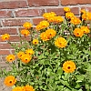
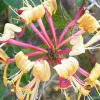
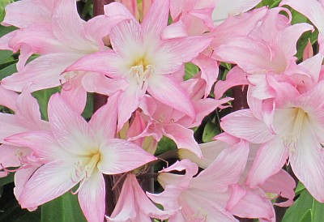
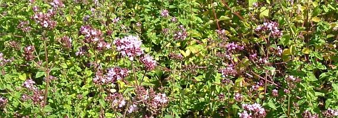
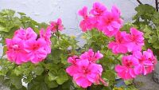
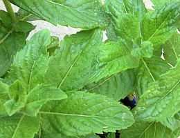
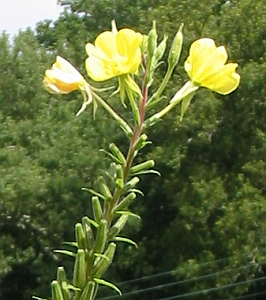
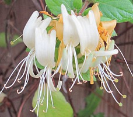

|  |  |  |
|
Jèrriais |
Angliais |
|
lé gardîn |
garden |
|
lé gardîn à lédgeunmes |
vegetable garden |
|
lé gardîn à flieurs |
flower garden |
|
gardinner |
to garden |
|
lé gardinnage |
gardening |
|
la gardinn'nie |
gardening |
|
un gardîngni |
gardener |
|
la pliante |
plant |
|
lé bouais |
tree |
|
la flieur |
flower |
|
d'la grainne |
seed |
|
tchilyi |
to pick |
|
un partèrre |
flowerbed |
|
un partèrre d'hèrbe |
lawn |
|
eune bordeuse |
border |
|
l'hèrbe |
grass |
|
la sèrcl'ye |
weed |
|
sèrclier |
to weed |
|
didgi |
to plant out |
|
plianter |
to plant |
|
bêtchi |
to plant with a spade |
|
eune bantchie |
hedge |
|
un arbuste |
shrub |
|
un tron |
trunk |
|
eune brantchette |
twig |
|
lé pétale |
petal |
|
la tigue |
stem |
|
eune branque |
branch |
|
la fielle |
leaf |
|
eune raichinne |
root |
|
lé tchuyau |
hose |
|
lé feunmyi |
manure |
|
lé hé |
garden gate |
|
la frouque |
fork |
|
la truelle |
trowel |
|
fourtchi la tèrre |
to fork the ground |
|
eune faûcheuse |
mower |
|
faûchi |
to mow |
|
flieuthi |
to flower |
|
arrouôser |
to water |
|
un arrouôseux |
watering can |
|
l'arrouôsage |
watering |
|
eune taupinniéthe |
molehill |
|
lé hangar |
shed |
|
un didget |
a dibber |
|
eune ente |
graft |
|
un greffeux |
grafting knife |
|
eune vîngne |
vine |
|
la ronche |
bramble |
|
un pot à flieurs |
flowerpot |
|
êmonder |
to prune |
|
transplianter |
to transplant |
|
dêdoublier |
to thin out |
|
la sèrre |
greenhouse |
|
des louochies |
windfalls |
|
un gardîn à frit |
orchard |
|
aver bouonne main |
to have green fingers |
|
eune èrboututhe |
cutting |
|
eune aîne |
cutting |
|
eune pelle |
shovel |
|
eune becque-de-corbîn |
secateurs |
|
eune faûcil'ye |
sickle |
|
la faux |
scythe |
|
les forches |
shears |
|
la chiviéthe |
wheelbarrow |
|
lé râté |
rake |
|
la sèrpe |
billhook |
|
lé craîncheux |
sieve |
|
la bêque |
spade |
|
èrbouter |
to bud |
|
un pangni à flieurs |
hanging basket |
|
un gliand |
acorn |
|
eune tchênelle |
acorn |
|
l'êcorche |
bark |
|
la p'liche dé bouais |
bark |
|
un bourgeon |
bud |
|
tailli |
to cut wood |
|
eune bouaîs'sie |
copse |
|
du vèrt bouais |
evergreen |
|
annuel |
annual |
|
lé brancage |
branchage |
|
eune pomme dé tchêne |
oak apple |
|
un têtard |
pollard |
|
d'la sève |
sap |
|
des catons |
catkins |
|
eune pomme dé sapîn |
pinecone |
|
allée |
garden path |
|
la houette |
hoe |
|
houetter |
to hoe, weed |
|
arrouôs'rêsse |
watering can |
|
dêplianter |
take up, tranplant |
|
eune truellée |
a trowelful |
|
lé gardîn enmuthailli |
walled garden |
|
èrplianter |
to replant |
|
la pliant'tie |
planting |
|
 |
 |
 |
 |
 |
 |
 |
| des belles-toutes-nues | d'la marjolaine | des gérémiennes | des g'zettes | d'la p'pèrmène | la rose d'un jour | du chuchet |
Viyiz étout: